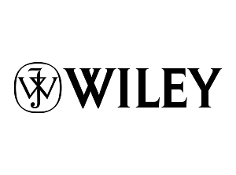
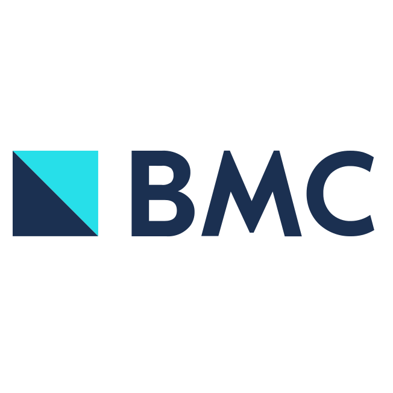
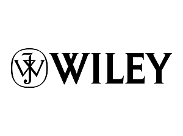
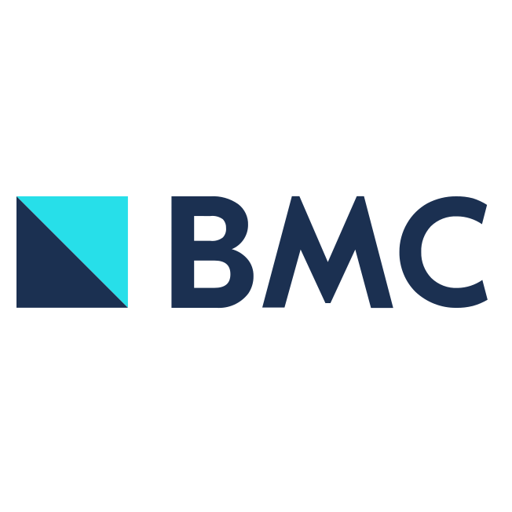

Writing research, made simple
Write confidently using guidelines created by the research community

Endorsed by leading publishers including:
  
 
Recommendations to help describe your work clearly
Reporting guidelines don’t advise how to do research, but how to describe it completely so it can be used by everyone. They can be used throughout your research journey:

Writing manuscripts
Write quickly, confidently, and avoid the blank page by using a template.

Checking manuscripts
Double-check your writing and demonstrate to journals that your work is described thoroughly.

Planning research
Considering what you’ll need to write can help you plan a study. But reporting guidelines won’t make decisions for you!
“Reporting guidelines make writing so much easier and help me develop as a researcher. I use one for every article I write!”
Alex Hamley, Edinburgh University
Reporting guidelines help authors and readers
Why use a reporting guideline? They make writing research easier, and transparent research leads to better patient outcomes.


Smoother publishing
Many journals require completed reporting checklists at submission.

Maximum impact
From nobel prizes to null results, articles have more impact when everyone can use them.
“We like publishing transparent research because we think it’s more likely to be used and cited. That’s why we ask authors to use reporting guidelines.”
Robin Lavery - Editor, International Journal of World Medicine
The EQUATOR Network
EQUATOR stands for Enhancing the QUAlity and Transparency Of health Research.
Our mission is to improve the reliability and value of published health research literature by promoting transparent and accurate reporting and wider use of robust reporting guidelines. We are the first coordinated attempt to tackle the problems of inadequate reporting systematically and on a global scale.
We advance the work done by individual guideline development groups. We maintain a database of reporting guidelines, run training courses on how to write research articles, have resources for publishers, peer reviewers, and reporting guideline developers.
We have centers in the UK (our head office), Canada, Australia, France, and China.